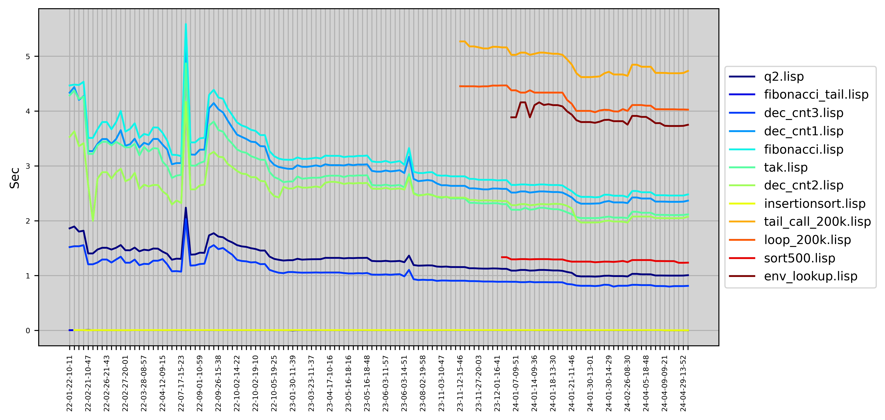

LispBM
LispBM is a lisp or scheme like language implemented in C targeting microcontrollers such
as the STM32, ESP32 or the NRF52. LispBM can be "embedded" into an application running
on a microcontroller to make your application scriptable using a lisp-like language.
LispBM sources can be found on GitHub.
LispBM has been integrated as a scripting engine in VESC BLDC Open Source motorcontroller since VESC firmware version 6.00.
LispBM is also integrated into the VESC EXPRESS firmware which is a code-base that can used when implementing your
own custom VESC "compatible" hardware devices or with off-the-shelf VESC Express hardware.
Getting an ESP32C3 devkit and using the VESC Express
firmware on that devkit is probably the easiest way to get started with LispBM. The VESC Express firmware comes with a lot of functionality built in and gives a good head start.
LispBM performance
The performance of the LispBM implementation is changing over time as
we add new functionality or perform a burst effort of optimization.
The values in the chart below are measured on an STM32F4 at 168MHz.


LispBM benchmark code can be found here:
Benchmarks 2022_02_27
Documentation
Work in progress LispBM programming manual.
Work in progress language reference.
Work in progress LispBM implementations documentation.
© Copyright 2022 Bo Joel Svensson